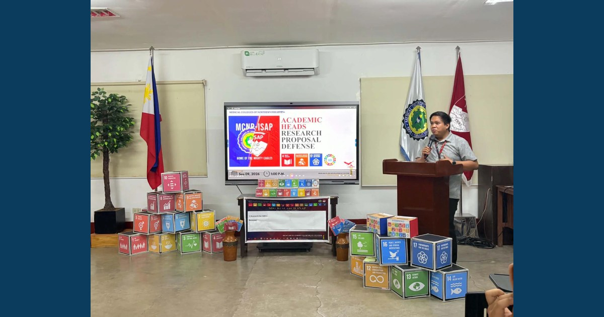

Research Leadership in Action

The MCNP–ISAP Research and Development Center conducted the Academic Heads Research Proposal Defense on September 9, 2026. Academic leaders presented and defended their research proposals, received constructive feedback, and refined their studies toward generating evidence-based solutions for institutional development.
Read full article